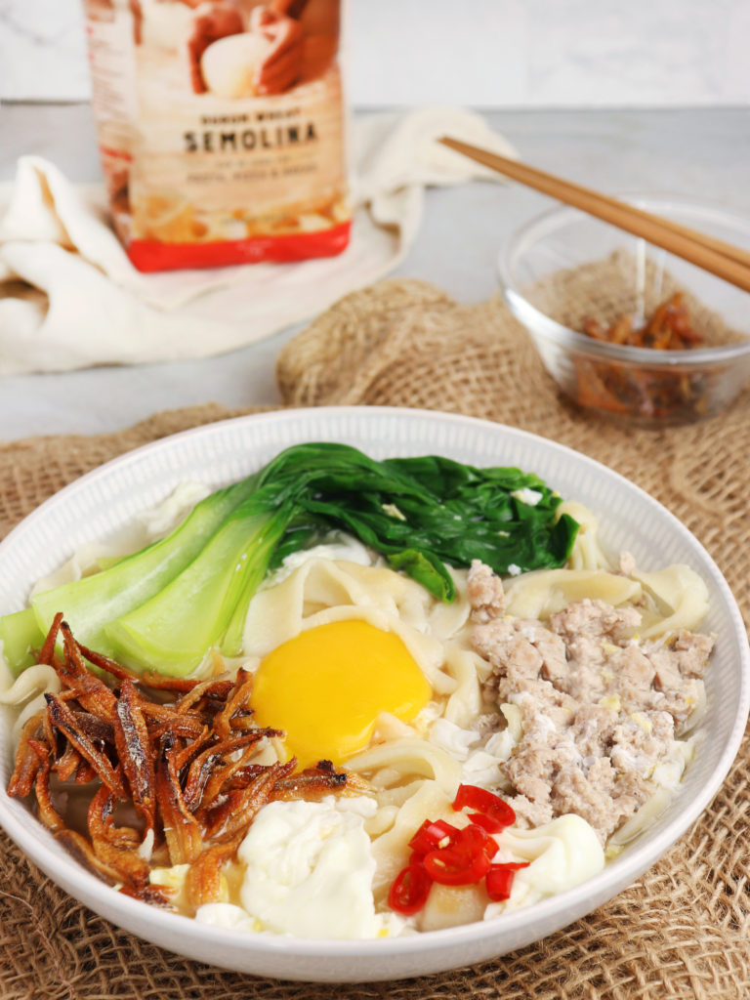

Ban Mian

Description
One of my other favourite dishes, especially when its cold outside or whenever I am craving noodles. The thick noodles and clear soup will certainly make your day a much better one.
The recipe is not that hard to follow and in fact you can make it harder for yourself if you choose to make the noodles from scratch!
Ingredients
- Noodles
- Minced Pork
- Baby Bok Choy
- Eggs
- Anchovies
- Knorr Chicken Stock Cubes
Steps
- Make the noodles
- Bring a pot of water to a boil and add the noodles in.
- Boil until noodles are cooked through and then strain the noodles.
- Bring water to a boil and add chicken cube stock.
- Add minced pork and bok choy to cook for a minute or two and the egg towards the end.
- Deep fry anchovies in some oil to get crispy ikan bilis
- Place the noodles into a bowl and pour the soup and ingredients over it.
- Optional: Add chilli padi if you can take the spice!